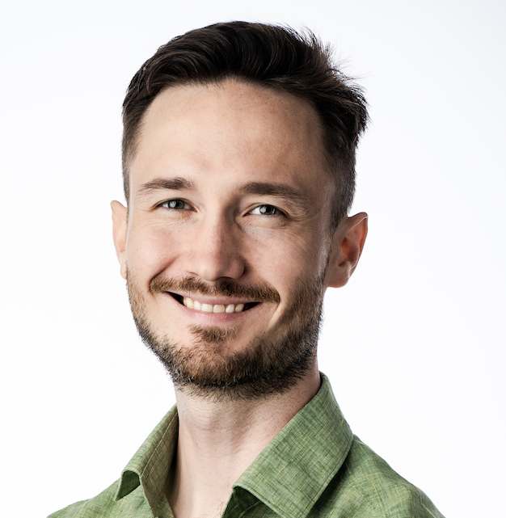

Help build the first exhibition on AI safety & society.
Artificial intelligence is reshaping how we live, work, and decide together. We're creating an interactive exhibition in Berlin where anyone can experience AI up close — question how it works, see where it fails, and understand what's at stake. We're looking for founding volunteers to build the exhibition with us.
The invitation
The conversation about AI's risks and promises happens in papers, labs, and policy rooms. The public deserves a place in it.
AI Safety & Society is a hands-on exhibition: interactive installations, public programs, and education that make the most consequential technology of our time tangible — something anyone can walk into.
And it will be open source from the start: our exhibitions, research, designs, and code published openly, so any community anywhere can adapt, remix, and build on what we make.
What we're building
Interactive installations that make the invisible visible
Hands-on installations where visitors probe how AI systems learn, fail, persuade, and decide — and what alignment, interpretability, and oversight actually mean in practice.
A civic forum for the questions that matter
Talks, debates, and workshops that bring researchers, policymakers, artists, and neighbors into the same room — turning AI safety from an insider topic into a public conversation.
Learning for the next generation of decision-makers
School programs and open resources that equip students and educators to reason about AI's societal impact — critically, concretely, and without hype or doom.
Where you come in
You don't need museum experience — you need curiosity and a few hours a week. Whatever your background, there's a way to leave your mark on this institution. Founding volunteers work directly with the core team and our partner network.
Exhibition & Experience Design
Prototype installations and interactives. For designers, artists, makers, and engineers who want their work walked through, not scrolled past.
Sign up → BResearch & Curation
Translate AI safety research into stories and artifacts the public can grasp. For researchers, writers, and students close to the field.
Sign up → CPrograms & Events
Shape and host talks, workshops, and community evenings. For organizers and connectors who make rooms come alive.
Sign up → DCommunications & Story
Give the museum its public voice — web, social, press, and beyond. For writers, photographers, and storytellers.
Sign up → EOperations & Partnerships
Help with fundraising, logistics, and institution-building behind the scenes. For people who like turning ideas into working organizations.
Sign up →interact : resonate : connect
Who's behind this

Partners
Bring art to life — alongside organizations advancing safe and beneficial technology futures.
Join us
Become a founding volunteer.
Tell us a little about yourself and what you'd love to work on. We read every submission and reply personally — usually within a week.
Form not loading? Open it directly →